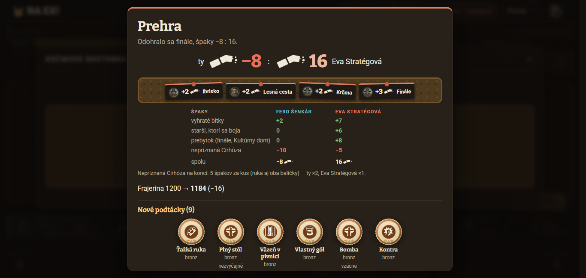
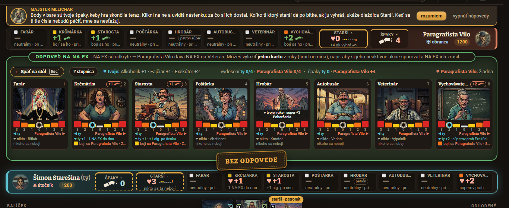
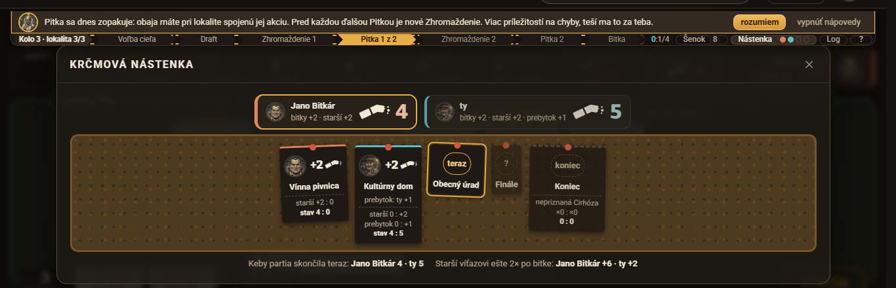
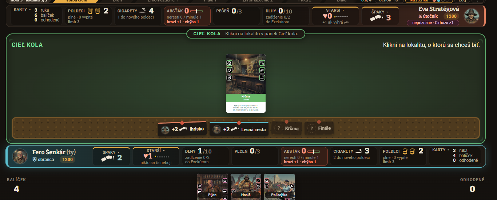
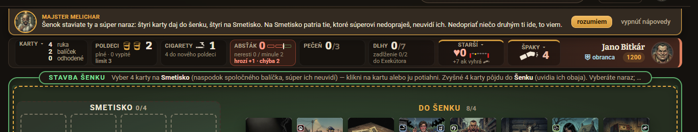
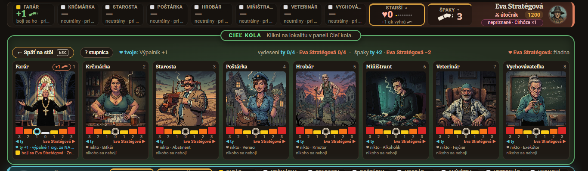
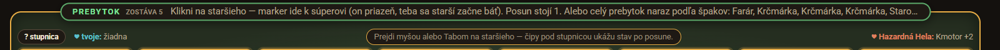
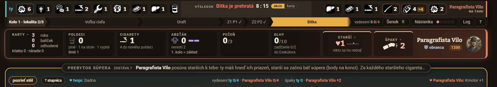
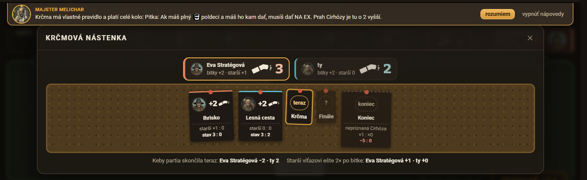

Playtest 20261027-105422
- Partia 1: Fero Šenkár (Ekonóm — šenok, cigarety, poldeci) proti Eve Stratégovej (opatrná, hrá na body) · vyhrala Eva 16 : −8 špakov (Fero −10 za 2 nepriznané Cirhózy, Eva −5 za jednu) · krátka hra (3 lokality + finále), 4 bitky, 123 ťahov, asi 45 minút.
- Partia 2: Šimon Starešina (Politik — starší, patronát, Pohoršenie) proti Paragrafistovi Vilovi (hľadač dier v pravidlách) · vyhral Vilo 22 : 0 (všetky 4 bitky) · krátka hra, 4 bitky, 121 ťahov, asi 36 minút.
- Partia 3: Jano Bitkár (Agresívny — bitky, Pohoršenia) proti Hazardnej Hele (Hazardérka — riziko, NA EX naslepo) · vyhrala Hela 29 : 4 (po K1 viedol Jano 4 : 0; finále 17 : 0) · krátka hra, 4 bitky, 124 ťahov, asi 40 minút.
Turnus na pravidlách v6.1 (strach len víťazovi bitky, patronát 1/2/3 cigarety, pas za karty v ruke, Odpor a zrážka), kód 32d9faa. Zameranie turnusu je UI a UX — playtesteri fotili svoj pohľad, výsledok je samostatná kapitola UI a UX. Turnus bežal pred nasadením veľkých pečiatok (e504005) a pred nástenkou namiesto stola (104f1d5, a3b5d89); nálezy, ktorých sa to týka, sú označené „už riešené / overiť znova“. Predošlý report: 20261027-062058 (v6, stredná hra, 3 partie), porovnania sú medzi krátkou a strednou hrou, ber ich orientačne. Partie hrali agenti cez textového klienta; snímky robili prehliadačom pri 1366×650 a 1600×1000.
Známky playtesterov
- Celkový priemer6,912 kritérií, 6 hráčov v 3 partiách · minule 6,8 (062058, v6) · posun +0,04 (6,89 oproti 6,85)
- Fero · P16,8porazený · minule 6,5 (062058)
- Eva · P17,4víťazka · minule 7,1 (062058)
- Šimon · P26,2porazený · minule 7,1 (062058)
- Vilo · P26,5víťaz · minule 5,8 (062058)
- Jano · P37,1porazený · minule 7,3 (062058)
- Hela · P37,4víťazka · minule 7,3 (062058)
| porazený, P1 | víťazka, P1 | porazený, P2 | víťaz, P2 | porazený, P3 | víťazka, P3 | v6 | ||||
|---|---|---|---|---|---|---|---|---|---|---|
| 1 | Zábava | 7 | 8 | 5 | 7 | 7 | 8 | 7,0 | 7,3 | −0,3 |
Zdôvodnenia
| ||||||||||
| 2 | Zmysluplné rozhodnutia | 7 | 8 | 6 | 7 | 8 | 8 | 7,3 | 7,3 | ±0,0 |
Zdôvodnenia
| ||||||||||
| 3 | Rovnováha a férovosť | 5 | 6 | 4 | 5 | 5 | 6 | 5,2 | 5,0 | +0,2 |
Zdôvodnenia
| ||||||||||
| 4 | Náhoda vs. zručnosť | 6 | 7 | 6 | 6 | 6 | 7 | 6,3 | 6,3 | ±0,0 |
Zdôvodnenia
| ||||||||||
| 5 | Interakcia hráčov | 9 | 9 | 8 | 7 | 9 | 9 | 8,5 | 8,7 | −0,2 |
Zdôvodnenia
| ||||||||||
| 6 | Tempo a prestoje | 5 | 6 | 7 | 6 | 7 | 7 | 6,3 | 5,8 | +0,5 |
Zdôvodnenia
| ||||||||||
| 7 | Zrozumiteľnosť pravidiel | 6 | 7 | 6 | 7 | 6 | 6 | 6,3 | 5,3 | +1,0 |
Zdôvodnenia
| ||||||||||
| 8 | Hĺbka vs. zložitosť | 7 | 8 | 7 | 7 | 7 | 8 | 7,3 | 6,7 | +0,7 |
Zdôvodnenia
| ||||||||||
| 9 | Znovuhrateľnosť | 7 | 8 | 7 | 7 | 8 | 8 | 7,5 | 7,7 | −0,2 |
Zdôvodnenia
| ||||||||||
| 10 | Téma a prepojenie s mechanikami | 8 | 7 | 7 | 7 | 7 | 7 | 7,2 | 6,5 | +0,7 |
Zdôvodnenia
| ||||||||||
| 11 | Napätie a priebeh | 5 | 6 | 3 | 4 | 6 | 6 | 5,0 | 6,8 | −1,8 |
Zdôvodnenia
| ||||||||||
| 12 | Originalita | 9 | 9 | 8 | 8 | 9 | 9 | 8,7 | 8,7 | ±0,0 |
Zdôvodnenia
| ||||||||||
Zhodli sa na interakcii a originalite (7–9, priemer 8,5 a 8,7), na rovnováhe (4–6, priemer 5,2 — rovnako nízko ako minule) a na napätí, ktoré kleslo z 6,8 na 5,0: všetky tri partie boli rozhodnuté po prvej či druhej bitke (24, 22 a 25 špakov rozdielu) a finále s prebytkom 8, 7 a 17 ich len spečatilo. Celkový priemer 6,9 je prakticky rovnaký ako minule (6,8); zrozumiteľnosť stúpla o 1,0 (5,3 → 6,3) a hĺbka a téma o 0,7 — hráči v zdôvodneniach chvália náhľady, nástenku Špakov a stupnicu starších.
Rozišli sa pri napätí (3–6): Šimon, ktorý prehral všetky 4 bitky (0 : 22), dal 3; Eva, Hela a Jano 6. Podľa výsledku víťazi dali v priemere 7,1, porazení 6,7 (Šimon 6,2, Fero 6,8, Jano 7,1) — najprísnejšie hodnotil znova porazený politik, najmilosrdnejšie Eva a Hela (obe 7,4), pričom Hela z 0 : 4 po K1 obrátila na 29 : 4. Podľa štýlu: Politik Šimon, ktorého plán (priazne) sa nevyplatil, dal rovnováhe 4 (ostatní 5–6) a Ekonóm Fero, ktorému hromadenie nevyhralo, 5; Agresívny Jano hodnotil vysoko (7,1), hoci prehral 4 : 29 — prehru pripísal vlastnej zámene karty pri NA EX. Krátka hra (3 lokality) mohla znížiť napätie aj tempo oproti strednej; porovnanie ber s rezervou.
Zamerania postáv
Fero Šenkár · Ekonóm
Ekonomika: či sa oplatí šetriť a investovať, či sú zdroje vyvážené a či šenok nie je pasca alebo samovýhra.
Hromadenie nevyhráva. Z 3 cigariet mal po K1 10 a na konci 14 — a nemal ich za čo minúť („cigareta nekúpi žiaden útok“); Eva skončila s 3 a vyhrala. Pas (+3) je najsilnejší zdroj a prehra je ekonomicky pozitívna (3 → 10). Daň Svokier (2 za NA EX × 2 Svokry) je naopak zmysluplná cena. Patronát na červenej za 1 cigaretu je „takmer zadarmo“, v žltej 3 cigarety za 1 špak je nepomer. Dlh je tiebreak a nemá výnos („rád berie Dlh, keď sa mu vráti“ — nevrátilo sa). Absťák trestá šetrenie, no „hrozí +1 · chýba 1“ je nečitateľné.
Eva Stratégová · opatrná, hrá na body
Bodovanie a plánovanie: či sa dá hrať na dlhý plán, či scorecardy a podmienky odmeňujú premýšľanie.
Dlhý plán existuje a zabral (z prebytku v K1 a K3 poslala 2× Autobusára a 3× Hrobára do červenej, finále „+4 ak vyhráš“ videla vopred), ale súper ho zmazal jedným lacným ťahom — patronát na Autobusára za 1 cigaretu (K2) jej zhodil 3 špaky na každú výhru. Z jej 21 špakov (pred −5) bolo 8 z prebytku vo finále a 6 zo starších, teda plán na viac kôl sa naviazal na prebytok. Prekážkou plánovania je Miňištrant (daň posunu sa dozvie až pri prebytku: 6 → 3 posuny). Chýba výhľad, ktoré lokality ešte prídu.
Šimon Starešina · Politik
Starší, patronát a priazne: či má politika váhu, či sa dá plánovať a či priazne nie sú náhodné bonusy.
Politika má váhu len pre víťaza (v6.1: strach dáva špaky len víťazovi). Porazený dostane priazeň (Fajčiar +1 cigareta, Exekútor, cigareta za každého posunutého staršieho), no tú nevie premeniť na výhru; po K2 mal súper potenciál 7 špakov za bitku. Plánovať sa dá len defenzívne (Pohoršenia vracajú markery do stredu pred špakmi) — to je rozhodnutie, ktoré sa oplatilo (−3 špaky súperovi). Patronát na červenej je „lacný reset“, nič nestaví; polovica priazní (Kmotor pri 0 dlhoch, Alkoholik bez NA EX, Exekútor proti hráčovi bez dlhov) je bez hodnoty — rozdané scorecardy sú čiastočne náhodné bonusy.
Paragrafista Vilo · hľadač dier v pravidlách
Pravidlá a hra: nezrovnalosti medzi PRAVIDLA.md, textami kariet a správaním hry, medzery, ktoré sa dajú zneužiť.
Prepočítal všetky 4 bitky (predpoveď = výpis) a overil v6.1: strach len víťazovi, patronát 1/2/3, pas = min(limit, ruka), Odpor (výhľad hrozby zmizol, keď boli všetky akcie aktívne alebo zrušené Odporom), Záverečná. Našiel 1 chybu textu v hre (log Absťáku s Manželkou) a niekoľko nejasností; zneužiteľné miesta: pas ako zdroj cigariet vo finále (+5 za tri prázdne kolá), Vdova ako ničiteľ balíčka (Miňištrant a Recidivista vyhodení z hry), 5 Pohoršení z jednej línie, ratchet Absťáku 1 → 4. Dal 22 : 0 a hodnotil miernejšie než minule (6,5; predtým 5,8).
Jano Bitkár · Agresívny
Bitky: či sa oplatí útočiť, či je výsledok bitky čitateľný vopred a či agresia nie je príliš silná alebo príliš slabá.
Agresia sa oplatí len cez NA EX a prevahu, nie cez hrubé Rany (Hasič + NA EX: 11 : 3 v K1; bez NA EX nikdy nemal 5 tuhých). Odhad bitky sedí, no nepočíta Pohoršenia pridelené až po Pitke (K2: „vyhrávaš 1 : 0“, skutočne 1 : 2 po Helinom Hrobárovi → Bitkár +2). Posledné slovo útočníka a Vdova + Posilnenie (4 Pohoršenia) sú podľa neho najsilnejšie nástroje; jediná protihra je Policajtka (zrušila mu 6 Pohoršení). Finále prehral omylom v zámene dvoch rovnakých kariet pri NA EX (+17 špakov súperke).
Hazardná Hela · Hazardérka
Náhoda a riziko: kde rozhoduje šťastie, či sa riziko dá počítať a či sa oplatí, alebo je hazard len lotéria.
Riziko sa dá väčšinou počítať: náhľad NA EX ukazuje „bitka 5:8 → 9:9“, kliatby aj odpoveď, a NA EX na vlastnú kartu s malou aktívnou a veľkou neaktívnou akciou (Hasič, Recidivista) je „skoro isté +5“ — výpočet, nie lotéria. Skutočná lotéria je zrážka (pár/nepár bez informácie), súperova skrytá ruka a hlavne prebytok vo finále bez stropu: 17 špakov jednou Petelicou ×2 je viac než všetky tri bitky o lokality dokopy (11). Cena zlyhania NA EX je malá (poldeci −1 o kolo, pečeň +1), preto je NA EX skoro vždy výhodný.
UI a UX (zameranie turnusu)
Všetci šiesti fotili svoj pohľad (snímky v playtest/20261027-105422-N/snimky/, 1366×650 a 1600×1000) a písali poznámky do časti „UI a UX“ svojho feedbacku; Hela aj samostatný ui.md. Výrezy nižšie sú z týchto snímok. Pozor: agenti robia snímku až po svojom ťahu a hrajú textovým klientom, takže „nevidel som“ neznamená „nie je“; nálezy o pečiatkach a modálnej nástenke sa týkajú kódu pred e504005, 104f1d5 a a3b5d89 — ich stav treba overiť znova na novej verzii. Nálezy sú zoradené podľa závažnosti.
-
1. Súhrn bitky a pečiatka momentu sa nedajú vidieť
závažnosť: vysokáuž riešené (e504005) / overiť znovavšetci šiesti- Čo nevidno
- Nikto z 6 hráčov nezachytil pečiatku (VÝPRASK a pod.) ani súhrn bitky: server vyhodnotí bitku hneď po poslednom ťahu a ďalšia snímka už ukazuje prebytok alebo nové kolo (Fero, Eva, Šimon, Vilo, Jano, Hela). Hráč, ktorý nesedí pri obrazovke, vidí „čo sa v bitke stalo“ len v logu. Eva po K2 (9 : 10) nevie povedať, odkiaľ sa vzal bod navyše — správa nesie len súčty „Bitka: tuhé 9:10“. Na konci hry sa ukazuje „Nové podtácky (9)“ — to sú achievementy, nie pečiatky momentov (Vilo: pečiatky sú teda
viditeľné až na konci hry
— v skutočnosti ani tie). - Návrh
- Súhrn bitky s rozpisom (Rana ×N, Pecka ×N, hrana, lokalita, Pohoršenia, prebytok) a pečiatkou nechať na stole aspoň do prvého ťahu ďalšej fázy a mať ho k dispozícii v logu a v nástenke; pridať „posledná bitka“ po prebytku. Nasadenie veľkých pečiatok (e504005) to má riešiť — overiť snímkou po bitke a človekom, nie len agentom.

Koncová obrazovka (Fero, 1366×650): rozpis špakov je výborný, „Nové podtácky“ sú achievementy, nie pečiatky bitiek. Spodok okna so tlačidlami je mimo obrazovky (nález 8). -
2. Panel Starší nahradí stôl práve vtedy, keď sa treba rozhodovať podľa stola
závažnosť: vysokáčiastočne riešené (nástenka namiesto stola) / overiť znovaŠimon, Jano, Hela, Vilo- Čo zakrýva
- Pri odpovedi na NA EX, v kroku Pohoršenie a prebytok a pri stavbe šenku sa stôl nahradí pohľadom na 8 starších (tlačidlá „pozrieť stôl“ / „Späť na stôl (Esc)“). Šimon:
pri odpovedi na NA EX hra prekryje stôl pohľadom na starších a kartu treba hľadať cez „Späť na stôl“
; Hela: po otvorení panela Starší sa skryje šenok, nedá sa porovnať naraz; Vilo: rozbalená stupnica zaberá celý stôl. Rozhodnutie o odpovedi na NA EX (najdôležitejšie rozhodnutie Pitky) sa tak robí bez toho, aby hráč videl karty, na ktoré odpovedá. - Návrh
- Pri odpovedi na NA EX nechať stôl a starších ukázať ako malý pás; panel Starší otvárať len klikom na dlaždicu, nie automaticky v krokoch, ktoré sa riešia na stole. Pri prebytku a Pohoršení nechať aspoň zmenšené karty so zvýraznením odkrytého NA EX.

Šimon, K3, odpoveď na NA EX (1366×650): namiesto stola panel starších; pás s pokynom je ukončený „…“; ruka dole je odrezaná o 2/3. -
3. Nástenka Špakov ako modálne okno zakrýva celý stôl; pri voľbe cieľa mýli
závažnosť: vysokáuž riešené (104f1d5, a3b5d89) / overiť znovaHela, Fero- Čo zakrýva
- Hela:
modál zakrýva celý stôl (bez možnosti hrať, kým je otvorený)
. Fero: pri výbere cieľa sa nástenka otvorí ako výber lokality (veľká karta Krčmy, „umiestniť na stôl“) a časová os bitiek zmizne —mýli
. Obsah nástenky samotnej všetci chvália (nález v kapitole Čo bolo dobré). - Návrh
- Presne to, čo kód po turnuse spravil: nástenka na mieste hracej plochy a voľba cieľa na nej. Overiť, že počas ťahu nezmizne stôl a že sa výber lokality nezamieňa s prehľadom bitiek.

Hela, K3 (1366×650): nástenka Špakov ako okno nad stolom; za ním je stôl stlmený a nehrateľný. -
4. Pri 1366×650 je ruka orezaná na hornú tretinu a stôl je tesný
závažnosť: vysokáFero, Eva, Vilo, Jano, Hela- Čo je orezané
- Ruka dole vidno len po názov karty, nie akcie a efekt (Fero:
mená vidno, akcie nie
); mená skrátené („Milujúca man…“, „Dievčina na v…“). Melicharova bublina zaberá 55–70 px výšky a nezmizne, kým ju hráč neklikne („rozumiem“) — Eva ju pri 650 px musela zrušiť ručne. Pás „STAVBA ŠENKU Vyber 4 karty na Smetisko… Vyberáte naraz; …“ je orezaný elipsou. Na stole sú karty súpera otočené hore nohami, ich text je ťažko čitateľný (Hela). - Návrh
- Pri výške pod ~700 px zapnúť kompaktný režim: Melichar len ako malý ikonový pás (alebo nezabrať miesto po prvom „rozumiem“ navždy), ruka s viditeľnými akciami (ikony akcií sú to, čo hráč pri výbere číta), stôl bez rezervy. Karty súpera pri hover/ťuknutí zväčšiť a otočiť, ako sa už deje s ruka kartou.

Fero, K3 (1366×650): ruka dole je odrezaná o 2/3 — názvy áno, akcie nie. 
Hela, K2: Melichar 55 px + orezaný pás „STAVBA ŠENKU … Vyberáte naraz; …“. -
5. Dlaždica Starší (#17): obsah správny, ale texty sú orezané a zbalená forma nehovorí, ktorí starší
závažnosť: strednávšetci šiesti- Čo je zbytočné / orezané
- Texty pod kartami: „bojí sa Eva Stratégová · Zn…“, „neutrálny · pri…“, „bojí sa Jano Bitkár · Vydes…“; mená v pruhu skrátené („MIŇŠTRA…“, „VYCHOVÁ…“); písmo ~9 px (Eva). Pre každého staršieho sú dva texty („priazeň nikto · Bitkár“ a „nikoho sa nebojí“) — zdvojenie (Vilo). Zbalená dlaždica ukazuje len „♥4 · nikto sa ho nebojí“, bez toho, ktorých starších sa to týka (Vilo); Hela: nie je zjavné, že je klikateľná (pomáha len Melichar); Jano: pri 1366×650 je na stole len malá lišta, priazeň aj strach vidno až po kliku.
- Návrh
- Jeden riadok „priazeň X · bojí sa Y“ (ikony ♥ a ✋ namiesto viet), mená starších bez skracovania (pri 1366 px aspoň prvých 8 znakov), na zbalenej dlaždici mini-stupnicu 8 bodov farebne podľa držiteľa priazne a viditeľný šípkový indikátor.

Fero, K3 (1366×650): všetkých 8 starších so stupnicou — čitateľné, no texty pod kartami a mená v pruhu sú orezané. -
6. Pásy s pokynom končia „…“ aj pri 1600×1000 a strácajú dôležitú vetu
závažnosť: strednáJano, Fero, Šimon, Hela- Čo sa stratí
- Príklady:
PREBYTOK zostáva 5 … Alebo celý prebytok naraz podľa špakov: Farár, Krčmárka, Krčmárka, Staro…
;POHORŠENIE … (špaky po každej bitke, ktorú vyhráš, cesta k vy…)
;ODPOVEĎ NA NA EX … a NA EX ich zrušil. …
; v súperovom prebytkuZa každého staršieho cigareta…
. Hráč nedočíta, čo konkrétne hra robí. - Návrh
- Dvojriadkový pás (zalomiť), alebo skrátiť vety na jednu informáciu a zvyšok dať do „?“ bubliny; pri 1366×650 radšej skryť obrázky než pokyn.

Jano, K1 (1600×1000): pokyn k prebytku končí „Krčmárka, Staro…“. -
7. Čakajúci hráč nevidí, čo súper z prebytku získa (#19)
závažnosť: strednáŠimon (áno), Jano a Vilo (čiastočne)- Čo chýba
- Pás „PREBYTOK SÚPERA zostáva 7 · Paragrafista Vilo posúva starších k tebe: máš ich priazeň, starší sa začnú báť súpera. Za každého staršieho cigareta…“ povie, čo súper robí, a kvalitatívne aj čo z toho bude mať. Nepovie koľko špakov to súperovi po bitke dá — Jano a Vilo to chceli vidieť v čísle; Jano:
nie čo z toho bude mať (špaky); to prišlo až v logu po akcii
. Pri odhade bitky podobne chýba, čo súper pridelí Pohoršeniami (nález 9). - Návrh
- Do pásu doplniť súhrn „súper +N špakov po výhre / ty +M cigariet“ a priebežne ho prepočítavať po každom posune.

Šimon, K2 (1600×1000): hore „Bitka je prehratá 8 : 15“, v páse „PREBYTOK SÚPERA zostáva 7“; pod ním panel starších s tlačidlom „pozrieť stôl“. Vpravo hore svieti „Paragrafista Vilo odpojený“ (artefakt agentov, nález 15). -
8. Koncová obrazovka pri 1366×650 pretečie — tlačidlá sú mimo obrazovky
závažnosť: strednáFero- Čo je orezané
- Okno „Prehra“ je vyššie než obrazovka; „pozrieť stôl / ohodnotiť hru / späť do lobby“ sú dole mimo záberu (Fero, snímka
114256-hrac1-koniec-body-klik.pngv 1366×650 končí pri „Nové podtácky“). Nevieme, či sa okno dá posunúť. Rozpis špakov hore (vyhraté bitky, starší, prebytok, Cirhóza) je naopak výborný. - Návrh
- Prilepiť tlačidlá na spodok okna (sticky) a nechať posúvať len obsah; na malej výške zbaliť „Nové podtácky“ a „Chýbalo málo“.
-
9. Odhad bitky nepočíta s Pohoršeniami a skrytými daňami; náhľad vyloženia nehovorí o vonkajšej hrane a Miňištrantovi
závažnosť: strednáJano, Hela, Eva, Šimon- Čo nevidno
- Odhad (a „HROZBA NA STOLE“) sedí na číslo, no (a) nezahŕňa Pohoršenia pridelené až po Pitke — Jano K2: „vyhrávaš 1 : 0“, skutočne 1 : 2; Hela K2: „prehrávaš 0 : 1“, po 2 Pohoršeniach 2 : 1; (b) Miňištrant (každý posun prebytku stojí 2) sa hráč dozvie až pri rozdeľovaní — Eva K3 z prebytku 6 dostala 3 posuny; (c) Šimon: podstrčené Dvojčatá a Dievčina mu v K1 dali súperovi +4 tuhé z vonkajšej hrany
bez varovania
(Eva naopak náhľad „ty: … · súper: …“ chváli — rozpor, treba overiť, či náhľad ukazuje aj súseda na vonkajšej hrane). - Návrh
- K odhadu pridať „súper má N nepridelených Pohoršení = až ±N tuhého“ (Jano, Hela), pri karte s efektom Výhra/Furt štítok „zdraží prebytok“ a pri podstrčení riadok „vonkajšia hrana: čo získa súper“.
-
10. Ponuka NA EX nerozlíši dve rovnaké karty; ponuka patronátu je dlhý zoznam
závažnosť: nízka (neoverené v prehliadači)textový klient agentovJano, Fero, Hela- Čo sa stalo
- Jano: dve karty Recidivista (uid 48 a 49) sú v ponuke NA EX rozlíšené len číslom, bez polohy — dal NA EX na stredovú omylom a vo finále to znamenalo +17 špakov súperke. Fero a Hela: ponuka patronátu má 9–14 skoro rovnakých riadkov (starší × náhradná karta). Ide o textový výpis; v prehliadači sa karta vyberá klikom.
- Návrh
- Overiť v prehliadači, či pri dvoch rovnakých kartách ponuka NA EX zvýrazňuje vybranú kartu na stole; ponuku patronátu zoskupiť podľa staršieho.
-
11. Melicharove rady prídu neskoro
závažnosť: nízkaJano- Čo sa stalo
- Jano:
„Vínna pivnica má vlastné pravidlo: NA EX až dvakrát“ prišlo až v kole, keď som už NA EX premárnil — mala by byť pri výbere cieľa a na stole
. (Pozn.: z logu K1 vyplýva, že Jano dal v Pitke 2 jedno NA EX a Hela dve; bitku aj tak vyhral 11 : 6, takže škoda sa nepreukázala.) Bublina „Body v bare sú tvoje špaky…“ ostáva po otvorení nástenky a zaberá 55–70 px. - Návrh
- Efekt lokality ukázať už na karte lokality pri výbere cieľa; po prečítaní bublinu skryť.
-
12. Panel zdrojov ukazuje vzorec limitu, nie zostatok
závažnosť: nízkaVilo- Čo sa stalo
- „Limit vykladania 2“ svieti aj po tom, čo hráč už vyložil 2 karty (zostatok 0); banner „Limit vykladania je vyčerpaný“ to napraví, ale panel by mal zobraziť zostatok.
- Návrh
- „Zostáva 0 z 2“.
-
13. Pojmy: „Smetisko“, „k súperovi“, „Absťák hrozí +1 · chýba 1“
závažnosť: nízkaEva, Hela, Fero, Vilo, Jano- Čo mätie
- „Smetisko“ je v UI, no v PRAVIDLA.md sa slovo nevyskytuje (pravidlá: „naspodok balíčka“). Hela:
„Pohoršenie k súperovi“ kvôli strachu je kontraintuitívne
a log „Prebytok: Vychovávateľka o krok k súperovi → Strach, priazeň +2 má hráč 2“ — marker ostáva na jej polovici, len o stupeň nižšie. Fero: chýba tooltip pri „Absťák hrozí +1 · chýba 1“ a pri „doliať −2 · nový poldeci −5“. Vilo a Jano: log Absťáku s Manželkou zavádza (chyba v hre, kapitola Nezrovnalosti). - Návrh
- Jednotná terminológia (Smetisko aj v pravidlách), pri posune markera písať „priazeň +2 pre X, strach z Y“ namiesto „k súperovi“, tooltip pri Absťáku.
-
14. Rozloženie dlaždíc: zlúčené Dlhy, skrátené nápovedy a Dlaždica Špaky sú v poriadku
pozitívny nálezFero, Eva, Hela, Šimon, Jano- Čo funguje
- Zlúčená dlaždica Dlhy („0/10 · zadĺženie 0/2 · do Exekútora“) a skrátené nápovedy („stačí na nový poldeci / doliať −2 · nový poldeci −5“) sú čitateľné; Jano oceňuje, že prah Exekútora vidno aj s vplyvom starších a lokality. Šimon:
skrátené nápovedy dlaždíc sú oseknuté na 1366×650
— drobnosť.
-
15. Indikátor „súper odpojený“ svieti medzi ťahmi
závažnosť: nízkaartefakt agentovEva, Šimon, Jano- Čo sa stalo
- Pri snímkach (K2 P1, K1 P2, K1 P3) hore svietilo „Paragrafista Vilo odpojený“ / „Hazardná Hela odpojený“. Konzolový klient agentov sa medzi ťahmi odpája, takže u ľudí to pravdepodobne nenastane; dôkaz chýba.
Top 5 UI/UX nálezov: (1) súhrn bitky a pečiatka sa nedajú vidieť (už riešené, overiť); (2) panel Starší prekrýva stôl pri odpovedi na NA EX; (3) nástenka ako modálne okno zakrýva hru (už riešené, overiť); (4) 1366×650: ruka orezaná, Melichar a pásy s „…“ zjedia výšku; (5) dlaždica Starší a odhad bitky nehovoria všetko, čo hráč potrebuje (orezané texty, chýbajúce Pohoršenia a špaky z prebytku súpera).
Čo hráči chválili (zachovať): nástenka Špakov — „Keby partia skončila teraz“ a „Starší víťazovi ešte 2× po bitke“ (všetci šiesti); náhľad NA EX „5:10 → 5:7, Cirhóza +3 (−15 špakov)“; „HROZBA NA STOLE“; texty v6.1 na stole („+4 ak vyhráš“, „špaky po bitke: ty +0, súper +4“, „dostaneš 3 cig.“); koncová obrazovka s rozpisom špakov.

Náhoda vs. zručnosť
- Priemer všetkých62,5 : 37,5zručnosť : náhoda · minule 63 : 37 (062058), predtým 67,5 : 32,5
- Fero · P160 : 40porazený · náhoda: ruka po 2 kartách, skrytý NA EX
- Eva · P160 : 40víťazka · náhoda: poradie kariet v šenku, hodnota hrany v K2
- Šimon · P265 : 35porazený · náhoda: malý balíček súpera s opakovaním kariet
- Vilo · P265 : 35víťaz · náhoda: dobratie Hasiča a Veterána po sebe
- Jano · P360 : 40porazený · náhoda: vrchná karta balíčka, šenok, kto kladie poslednú
- Hela · P365 : 35víťazka · náhoda: zrážka, súperova ruka, prebytok vo finále
Odhady sú úzke (60–65 % zručnosti), priemer 62,5 : 37,5 sa oproti minulému reportu (63 : 37) nezmenil a známka „Náhoda vs. zručnosť“ ostala 6,3. Rozhodujúce momenty boli v tomto turnuse voľby (NA EX na vlastnú kartu, odpoveď Manželkou, patronát, Pohoršenia pred špakmi), zdroje náhody sú tri: skrytý NA EX a zrážka (hádanka), poradie kariet v šenku / balíčku (Vdova vyhodila Dvojčatá a dva muži) a hlavne prebytok vo finále bez stropu. Zrážka padla len raz z 12 bitiek (P3 K3, 8 : 5), takže skrytá hádanka je v tomto turnuse menší problém než minule (4 z 18).
Víťazi odhadli zručnosť 60 / 65 / 65 %, porazení 60 / 65 / 60 % — výsledok na odhad nevplýva. Prázdne rozhodnutia sú vo finále (Pitky 2 a 3, limit 1–2, pas s farmením cigariet; Fero, Eva, Vilo) a pri drafte s 0–1 cigaretou (Hela, Jano, Vilo: „stop“). Lepší hráč by: nedal Silnú vedľa karty s neaktívnym Poldeci (Fero −10), nedal Miňištranta do vlastnej línie pri plánovanom prebytku (Eva), vyložil Policajtku pred patronátom (Šimon), nezamenil kartu pri NA EX (Jano), v K1 neposielal 3 starších k súperovi, keď sa dá všetko zmazať Pohoršeniami (Vilo).
Kľúčové momenty
- P1 · K2skrytá informáciavoľba
Fero dal NA EX na Veterána (daň Svokier 4 cigarety), Eva odpovedala Pijanom, on Manželkou (Odpor) — 10 : 9, hra predpovedala presne a hráč sa rozhodol podľa „HROZBA NA STOLE: súper mohol skryto dať NA EX na Hasič → 7:9“. Fero:
rozhodla voľba, nie náhoda
. Eva: K2 rozhodli náhoda (jeho Petelica presne na hranovom indexe z balíčka) a posledné slovo útočníka. - P1 · finálevoľbanáhoda Autobusár + Silná + NA EX Evy zdvojili Ferovo neaktívne Poldeci na pečeň ×4 → 3 Cirhózy, 2 nezachrániteľné (−10) v poslednej Pitke; prebytok 8 sa zmenil na 8 špakov. Fero to priznáva ako vlastnú chybu (Silná vedľa Autobusára), Eva ako výsledok plánu (4 špaky za starších z K1 a K3). Prázdne: Pitky 2 a 3.
- P2 · K1voľba Vilo: Vypiť + Hasič + Veterán naraz (10 : 3), potom Miňištrant ako odpoveď tak, aby všetky akcie Recidivisty boli aktívne alebo zrušené Odporom — hrozba NA EX zmizla. Šimon: jeho podstrčené Dvojčatá a Dievčina dali súperovi vonkajšou hranou +8 tuhého (voľba, vlastná chyba). Šimon prehral všetky 4 bitky a skončil s 0 špakmi.
- P2 · K2voľbaskrytá informácia Šimon postavil 5 Pohoršení (Presbiter, 2 Vdovy); Vilo dal NA EX na Vdovu (nie na Veterána, lebo náhľad ukázal Cirhózu) a zrušil 2 z nich, ostatné 3 vrátili Vilove posuny. Zručnosť oboch (výber cieľa pomocou náhľadu).
- P2 · K3voľba Šimonov patronát na Hrobára na červenej za 1 cigaretu s Policajtkou v línii (Vilove 3 Pohoršenia z patronátu neplatili); prehral 5 : 6 o 1 tuhé a odhodil posledný poldeci. Šimon tvrdí, že Policajtku nevyložil — log ukazuje, že ju vyložil (11:26).
- P3 · K1skrytá informáciavoľba
Jano dal NA EX na vlastný Hasič (Petelica ×2 = 6, bitka 11 : 6); Hela v Pitke 2 dala 2 NA EX (Svokra a Miňištrant), Jano 1. Hela:
nemala som ako vedieť, kam dá NA EX
— zrážka bez informácie. - P3 · K2náhodavoľba Hela: Policajtka zrušila Janových 6 Pohoršení (3 z patronátu), Hrobár → Bitkár +2 tuhé obrátil 0 : 1 na 2 : 1 — zručnosť/výpočet; Jano: odhad „vyhrávaš 1 : 0“ ho zradil (skrytá informácia + odhad bez Pohoršení). Vdova vyhodila Janove Dvojčatá z vrchu balíčka (náhoda).
- P3 · K3skrytá informáciavoľba
Zrážka na Veteránovi: Jano uhádol Helin cieľ (z Veterána spravil Výtržníka), Hela odpovedala Miňištrantom — 8 : 5. Hela:
kameň-papier-nožnice
; Jano: čítanie súpera + posledné slovo (jeho odpoveď prišla až po Helinej). - P3 · finálenáhodachyba hráča Jano omylom (dve rovnaké Recidivisty) dal NA EX na Helinu Recidivistu s neaktívnou Petelicou → Petelica ×2, bitka 17 : 0, prebytok 17 = 17 špakov — viac než všetky 3 predošlé bitky dokopy. Z 29 Helinych špakov bolo 18 z prebytku (62 %).
Špaky a snehová guľa (v6 → v6.1)
Zloženie špakov víťaza pred Cirhózou (z koncových obrazoviek a nástenky). 062058 (v6, stredná hra): strach tvoril 41–86 % (priemer víťazov ≈ 55 %).
| Partia | Víťaz (špaky pred −5) | Bitky | Starší (strach) | Prebytok vo finále | Rozdiel · finále |
|---|---|---|---|---|---|
| P1 | Eva 21 (16 po −5) | 7 (33 %) | 6 (29 %) | 8 (38 %) | 24 · finále 15 z 21 (71 %) |
| P2 | Vilo 22 | 9 (41 %) | 6 (27 %) | 7 (32 %) | 22 · finále 13 z 22 (59 %) |
| P3 | Hela 29 | 7 (24 %) | 4 (14 %) | 18 (62 %) | 25 · finále 21 z 29 (72 %) |
| Spolu | 72 | 23 (32 %) | 16 (22 %) | 33 (46 %) | finále 49 z 72 (68 %) |
v6.1 spravila, čo mala: podiel strachu na špakoch víťaza klesol z ≈ 55 % na 22 % (Eva 6, Vilo 6, Hela 4) a porazený už za starších nedostane nič (Fero a Šimon 0 za celú partiu; Jano 2 iba v K1, keď bitku vyhral). Snehová guľa ale ostala — jej motor sa presunul: prebytok vo finále dal 8, 7 a 17 špakov (46 % všetkých špakov víťazov; v P3 62 %) a finále celkovo 68 %. Rozdiel na konci bol 24, 22 a 25 špakov (minule 13, 24 a 18); každá partia bola rozhodnutá po 1.–2. bitke a finále ju len zväčšilo (P1: −8 : 16 po 2 : 6 pred finále, P3: 4 : 12 → 4 : 29). Posledné slovo útočníka (porazený z predošlej bitky) je pritom v praxi hlavný dobiehací nástroj: útočník vyhral 9 z 12 bitiek (P1 4 : 0, P2 2 : 2, P3 3 : 1; z logov „Kolo N: útočí hráč X“, vo finále útočí vedúci), ale dobiehanie platí len pre bitky, nie pre prebytok vo finále.
Nezrovnalosti pravidiel a hry
Hráči nahlásili spolu 14 rôznych položiek (po zlúčení duplicít 8 nižšie + 8 zbalených omylov); všetky prepočty bitiek (Fero 4, Eva 4, Vilo 4, Šimon 3, Jano 3, Hela ~25 náhľadov) sedeli na číslo. Chyba v hre je jedna a je to chyba textu (nález 1). Zvlášť sú otázky na autora.
-
1. Log Absťáku s Manželkou zavádza
chyba v hre (text)Vilo (3), Jano (3)potvrdené v kóde- Pravidlo
- §8 / Milujúca manželka: Absťák aj pri rovnakom počte nerestí; bez Manželky Absťák prichádza, keď má hráč nerestí menej než minule.
- Čakal
- Vysvetlenie, prečo Absťák prišiel.
- Stalo sa
- P2 (Vilo): „v kole mal 0 nerestí, v predošlom 1 nerest (Milujúca manželka: Absťák aj pri 1 nerest)“ — Absťák by prišiel aj bez Manželky (0 < 1). P3 (Jano): „Absťák aj pri 3 neresti“ pri 1 nerest vs 3.
- Príčina
packages/core/src/engine.ts, ~r. 4278 (vyhodnotenie Absťákov na konci kola): zátvorku s Manželkou pripíše vždy, keďmanzelka > 0, nie len vtedy, keď Absťák vznikol vďaka nej (teraz >= minule).- Oprava
- Pripísať zátvorku len pri
teraz >= minule. Náročnosť malá.
-
2. Odhad bitky nezahŕňa Pohoršenia, ktoré sa prideľujú až po Pitke
nejasné pravidlo (otázka)Jano (1), Hela (2)potvrdené pozorovaním- Pravidlo
- §9.2: Pohoršenie sa prideľuje v kroku Pohoršenie po Pitkách a priazeň (Bitkár) platí hneď, v tej istej bitke.
- Čakal
- Odhad, ktorý ukáže aj to, čo súper ešte môže pridať.
- Stalo sa
- P3 K2: odhad „ty 1 : súper 0, vyhrávaš“, súper mala 4 Pohoršenia (2 Vdovy ×2 cez Posilnenie), dala 2 na Hrobára k sebe (Bitkár +2) a bitka skončila 1 : 2. Hela: odhad „prehrávaš 0 : 1“, po jej 2 Pohoršeniach 2 : 1. Hrozbu nepridelených Pohoršení zná len náhľad NA EX (cez
hodnotaPohorseni,nahlady.ts), nie samotný odhad. Rovnaký poznatok bol už v 062058 (#47). - Otázka
- Má odhad bitky ukazovať rozsah („až ±N tuhého z N Pohoršení“)? Jadro nepočíta zle — chýba informácia.
-
3. Cirhóza z poslednej Pitky finále sa nedá priznať ani zachrániť
nejasné pravidlo (otázka)Fero (3), Eva (#76)- Pravidlo
- §8: nová Cirhóza ide do odhadzovacieho balíčka; §14: nepriznaná stojí −5 (ruka aj oba balíčky); priznať sa dá len v Zhromaždení; po poslednej Pitke finále už Zhromaždenie nie je.
- Stalo sa
- P1 finále: NA EX × Silná zdvojili neaktívne Poldeci Autobusára na pečeň 4, Fero dostal 3 Cirhózy (1 za Pitku), 2 ostali nepriznané (−10). Eva: jej −5 závisí od poradia v balíčku (v 4 kartách Cirhózu nenašla).
- Otázka
- Je zámer, že Cirhóza z poslednej Pitky finále je trvalá? (Nie strop: výstup, napr. Pohreb po finále, alebo priznanie za cigarety — viď návrh S5.) Rozhoduje autor.
-
4. Pes vo finále: bonus „len na strane majiteľa“
nejasné pravidlo (otázka)Fero (2)- Pravidlo
- §16 Pes: +1 tuhé za pár „len keď Pes leží na strane svojho majiteľa“; §14b: vo finále kraje nie sú.
- Stalo sa
- Hra Psovi bonus vo finále započítala (Rana pár + 1). Pravidlo neurčuje, či to má platiť.
- Otázka
- Platí bonus Psa vo finále vždy, nikdy, alebo podľa toho, kto kartu položil? Doplniť do §14b.
-
5. Počet Pitiek a Posilnenie ×2 na hrane
nejasné pravidlo (otázka, malá)Eva- Pravidlo
- §7: „ráta sa každá aktívna akcia hrany (aj Odpor či Posilnenie v páre)“.
- Stalo sa
- Hrana dverí mala „Cigareta ✓×2“ (Posilnenie súpera), pri výčape 2 aktivované akcie; počet Pitiek vyšiel 2, takže ×2 sa do počtu nerátalo. Hra postupuje podľa litery (akcia je jedna); príklad v §7 ale nehovorí, či zdvojená akcia je jedna alebo dve (už nahlásené v 062058).
- Otázka
- Doplniť do §7 vetu: „Posilnenie zdvojí účinok akcie, nie počet aktivovaných akcií.“
-
6. „Prebytok … k súperovi → Strach, priazeň +2 má hráč 2“ — formulácia logu
nejasné (formulácia)Hela- Stalo sa
- Log „o krok k súperovi“ pri posune prebytkom, pričom marker ostáva na polovici hráča 2, len o stupeň nižšie (silnejší strach). „Pohoršenie k súperovi“ pre nováčika mätie; hráči sa v textoch zhodujú, že pojem je kontraintuitívny. Pravidlá §9.2 používajú to isté slovo správne. Otázka: premenovať v texte na „priazeň +2 pre X, strach z Y“?
-
7. „Smetisko“ vs. „naspodok balíčka“
chyba v pravidlách / terminológiiEvapotvrdené- Stalo sa
- UI (
HernaPlocha.tsx: „Vyber 4 karty na Smetisko“) používa slovo, ktoré sa vPRAVIDLA.mdnevyskytuje — pravidlá hovoria „nevzaté idú naspodok“. Doplniť pojem do §5 alebo zmeniť text UI.
-
8. Zadanie hovorí
skipLiecba, hra platískipPohrebzastarané zadanie / ťahákFero (1)- Stalo sa
- Server odmietol
skipLiecba; §11 pozná len Pohreb (Liečba už nie je, v4). V repozitáritools/playtest/apackages/server/srcnázovLiecbauž nie je (overené grepom) — zastarané bolo zadanie pre agenta, nie ťahák v repozitári. Bez dopadu na hru.
Omyly hráčov a nálezy mimo hry (zbalené, 8)
- Patronát odmietol Manželku (Šimon 1). §10: na scorecard ide Občan alebo Zviera „nie Nástroj, nie Kliatbu“; Manželka je Občan aj Kliatba, server odmietol správne a ponuka ju nenaponúkla. Zámer.
- Panel „limit vykladania 2“ pri zostatku 0 (Vilo 1). §6: limit = plné poldeci + 1, počíta sa nanovo na začiatku Zhromaždenia; zobrazenie ukazuje vzorec, banner „vyčerpaný“ to dopĺňa — UI, viď UI nález 12.
- „Starší víťazovi ešte 2× po bitke +4“, reálne 3 (Vilo 2). Odhad pri stojacich markeroch; v P2 K3 sa marker Krčmárky medzitým vrátil Šimonovým Pohoršením. Hra správna; pravidlo to neľúbi ako sľub, ale panel píše „keby markery stáli“.
- Dve rovnaké karty v ponuke NA EX (Jano 2). Textový klient agentov rozlíšil len uid; hra správne, omyl a UX klienta (UI nález 10).
- Šimon „Policajtku nestihol vyložiť“. Log (11:26:29) ukazuje, že ju vyložil do svojej partie a že zrušila 3 Pohoršenia z patronátu; feedback nepresný.
- Ťah poslaný mimo poradia (Eva, Vilo). „Nie si na ťahu“ po fáze, ktorú hra preskočila — hra správne.
- Klient po NA EX hlási „tvoja časť Pitky sa končí“ len niekedy (Eva). Správanie textového klienta, nie pravidiel.
- Pitky vs. Posilnenie ×2, pečiatky a rekapitulácia. Pozri nález 5 a UI nález 1.
Návrhy na strategickosť
Zásada Michala (CLAUDE.md, 2026-10-27): žiadne umelé stropy a limity zdrojov. Hráči navrhli niekoľko stropov — v tabuľke nižšie sú označené rozpor so zásadou a pri každom je napísané, aký problém sa za ním skrýva a ako ho riešiť bez stropu (výstup pre zdroj, protihra, nová možnosť). Hlavné návrhy sú zoradené podľa toho, koľko zručnosti pridajú.
Hráčske stropy a ich alternatíva (rozpor so zásadou Michala)
| Hráčsky návrh (kto) | Čo sa za ním skrýva | Riešenie bez stropu |
|---|---|---|
| Strop prebytku vo finále 5 špakov (Fero, Jano, Hela) | Finále dá 8–17 špakov jednou bitkou; porazený nemá protihru. | Výkup prebytku poraženým za cigarety, finále po jednej Pitke (S2). |
| Strop násobkov ×2 pre PP, Poldeci, Dlh a zahodenie Cirhózy z poslednej Pitky za 2 cig. (Fero) | NA EX × Silná = pečeň ×4, 3 Cirhózy, neodvratné −15 v poslednej Pitke. | Výstup: zahodenie/priznanie Cirhózy aj po finále za cigarety (S4); ukázať najhorší prípad pred položením (S1). |
| Strop zdvojenia neaktívnej akcie na +3 tuhé (Hela) | NA EX na Hasiča/Recidivistu = +5 (Petelica ×2), „riziko bez rizika“. | Protihra (Odpor na tom indexe, zrážka, odpoveď — existujú), prípadne cena NA EX podľa veľkosti zdvojenej akcie. |
| Max 3 Pohoršenia na hráča a bitku (Vilo); strop 4 (Jano); strop prebytku 3 posuny (Šimon) | Päť Pohoršení z jednej línie zmaže plán; jediná protihra je Policajtka. | Druhá protihra a cena Vdovy (S7). |
| Strach raz za vstup do zóny / strop 4 špaky za bitku (Šimon) | Snowball: +7 špakov za bitku z tých istých markerov. | v6.1 už zmenila strach na len-víťazný (22 % špakov). Zvyšný snowball rieši S2 a S8. |
| Strop cigariet 8 (Eva); pas vo finále bez cigariet alebo max 1 (Vilo) | Porazený hromadí 13–14 cigariet bez využitia; pas vo finále je prázdne kolo. | Protest, výkup prebytku, zahodenie Cirhózy (S4). |
Nezaradené (hra ich už rieši alebo hráč pravidlo nepoznal): Šimon: strop prebytku „rozhodnutie, ktorých 3, by bolo ostré“ — prebytok už dnes nemá limit pozícií a Miňištrant ho sám zdražuje (§9.4); Vilo: cigaretu za posunutého staršieho len ak ostane posunutý do konca kola — malý, no zmenil by existujúci vzorec (§9.4 „za každého posunutého staršieho 1 cigareta“), nie hlavný; Vilo: ratchet Absťáku podľa polovice maxima — mení tému Absťáku, jeden hlas.
Čo bolo dobré
- Interakcia (8,5; 4× 9). Podstrčenie, Odpor, odpoveď na NA EX, Svokra, zrážka —
každé kolo je dvojboj
(Fero),súper mi skríži plán skoro každé kolo
(Eva). všetci šiesti - Nástenka Špakov. „Keby partia skončila teraz“ a „Starší víťazovi ešte 2× po bitke“ ukážu stav aj potenciál; Eva:
najlepšia informácia o bodovaní v hre
, Fero:pri 650 px sa zmestí
. všetci šiesti - Náhľady a hrozby sedia na číslo. Fero: „HROZBA NA STOLE: súper mohol skryto dať NA EX na Hasič → 7:9“ ho viedla k správnemu NA EX v K2; Vilo mu náhľad zachránil pred Cirhózou; Eva:
najsilnejší nástroj na plánovanie, aký v hre je
(výhľad „5:10 → 5:7“, Pohoršenia ≈ +8 špakov). Fero, Eva, Hela, Vilo, Jano - Pravidlá v6.1 sú na stole čitateľné. „+4 ak vyhráš“, „ty +0 ak vyhráš, súper +4“ (strach len víťazovi), patronát s cenou a Pohoršeniami navyše, pas „dostaneš 3 cig. — najviac toľko, koľko máš kariet v ruke“ — všetci hráči ich pochopili. Fero, Eva, Šimon, Vilo, Hela
- Dlhý plán funguje. Eva: z prebytku 3 a 6 poslala 2× Autobusára a 3× Hrobára do červenej a finále „+4 ak vyhráš“ videla vopred; Šimon: Pohoršenia pred špakmi dali −3 špaky súperovi — plánovateľné rozhodnutie. Eva, Šimon
- Koncová obrazovka s rozpisom špakov (vyhraté bitky, starší, prebytok, Cirhóza) a daň Svokry ako skutočná ekonomická voľba (Fero:
platím 4 cigarety za 4 tuhé
). Fero, Eva, Hela
Čo treba ešte zlepšiť
Návrhy na strategickosť a nezrovnalosti sú v kapitolách vyššie, UI v kapitole UI a UX; tu je zvyšok.
-
1. Snehová guľa: po 1.–2. bitke je partia rozhodnutá
pravidlá a balansvšetci šiestináročnosť: stredná- Čo je zle
- Napätie kleslo z 6,8 na 5,0 (Šimon 3, Vilo 4); rozdiely 24, 22 a 25 špakov (minule 13, 24, 18); Šimon prehral všetky 4 bitky 0 : 22. Strach len víťazovi síce znížil podiel starších (22 %), ale prebytok vo finále zaujal jeho miesto (46 %).
- Návrh
- S2 (finále: výkup prebytku a protihra) a S8 (dobiehanie).
-
2. Patronát je v červenej takmer zadarmo
pravidlá a balansFero, Eva, Šimon, Vilo, Helanáročnosť: malá- Čo je zle
- Všetky 3 patronáty boli v červenej za 1 cigaretu; 2 z 3 vyhraté (pred v6.1: 2 z 8). S Policajtkou v línii neplatia ani Pohoršenia navyše (P2 K3, P3 K2), takže patronát stojí 1 cigaretu a poldeci len pri prehre. Eva: súper jej zmazal plán za cenu lacnejšiu než karta zo šenku.
- Návrh
- S6 (cena podľa hodnoty markera) alebo pridať Policajtke cenu pri patronáte; rozhodnúť po ďalšom turnuse (n = 3).
-
3. Cigarety porazeného bez využitia a pasívne finále
pravidlá a balansFero, Eva, Vilonáročnosť: stredná- Čo je zle
- Fero 14 cigariet, Šimon 13; vo finále Pitka 2/3 a 3/3 „už len skipujem“ (Fero), tri prázdne Zhromaždenia a pas s farmením (Vilo +5). Draft s 0–1 cigaretou je prázdne rozhodnutie (Hela, Jano, Vilo). Hráčske stropy odporujú zásade.
- Návrh
- S4 (výstupy pre cigarety).
-
4. Veľmi smútiaca vdova, Hasič + Veterán a slabé karty
kartyVilo, Šimon, Jano, Helanáročnosť: stredná- Čo je zle
- Vdova: 2 kusy = 5 Pohoršení a mazanie balíčka (Vilo prišiel o Miňištranta a Recidivistu), Janovi 4 Pohoršenia z Posilnenia. Hasič + Veterán: Posilnenie × Pecka 4–8 tuhého z dvoch kariet, zopakovanie kombinácie kvôli malému balíčku (Šimon, Vilo). Slabé: Manželka (Eva, Vilo, Šimon, Hela), Presbiter vo finále nepôsobí (Fero, Vilo), Miňištrant, Pijan, Dievčina, Svokra proti hráčovi bez cigariet (Hela), Povera (hrana mäkké poškodenie len proti priznaným Dlhom — nedala nič, Eva). Jano: Noviny a Pasca nikdy relevantné.
- Návrh
- Úprava textov (Vdova — viď S7; Presbiter má podmienku, ktorá vo finále nikdy neplatí) cez Navrhára kariet.
-
5. Chýbajúce karty
kartyEva, Fero, Jano, Hela, Vilonáročnosť: malá–stredná- Čo chýba
- Karta, ktorá robí z Cirhózy v balíčku nástroj (hľadanie) a karta na cielené zrušenie patronátu (Eva); protiťah na násobenú pečeň (Fero); obrana vlastnej karty pred NA EX (Jano); karta, ktorá zjemní hádanku NA EX (Hela); lacná kontra na Pohoršenia okrem Policajtky a ochrana balíčka pred Vdovou (Vilo).
-
6. Log Absťáku s Manželkou
chyba v hreVilo, Janopotvrdené v kódenáročnosť: malá- Čo je zle
- Text „Milujúca manželka: Absťák aj pri N“ sa pripíše aj vtedy, keď Absťák prišiel bez nej (
engine.ts~r. 4278). Oprava v kapitole Nezrovnalosti (1).
-
7. Absťák, Odpor a „k súperovi“ sú nečitateľné bez pravidiel
zrozumiteľnosť pravidielFero, Vilo, Eva, Hela, Janonáročnosť: malá- Čo je zle
- „Absťák hrozí +1 · chýba 1“ (Fero:
nikto nepochopí bez pravidiel
); „akcia zrušená Odporom nie je ani aktívna, ani neaktívna“ treba čítať dvakrát (Fero, Vilo, Eva — Eva si pri výbere NA EX nebola istá, ktorú kartu ✗ myslí); „k súperovi“ pri Pohoršení (Hela); Smetisko vs. naspodok (Eva); príklad Pitiek s Posilnením ×2 (Eva). - Návrh
- Tooltipy a doplnenie príkladov do §7 a §9.2 (viď nezrovnalosti 5–7).
-
8. Tempo: dlhé Pitky vo finále a čakanie
pravidlá a balansFero, Eva, Vilo, Helanáročnosť: malá- Čo je zle
- Tempo 6,3 (+0,5 oproti minule, krátka hra). Vo finále 3 Pitky + 3 Zhromaždenia sú „takmer prázdne“; Hela: Zhromaždenie 2–3× za kolo je dlhé, súper dlho premýšľal. Pas s 2 kartami a 0 cigaretami je jediný rozumný ťah (prázdne rozhodnutie).
- Návrh
- Vo finále preskočiť Zhromaždenie, keď obaja hráči nemajú čo položiť; automatický pas s prázdnym limitom už existuje, rozšíriť na Pitku bez cieľa NA EX.
Overenie nedávnych zmien
Návrhy na overenie
| Návrh | Verdikt | Dôvod |
|---|---|---|
| #17 Stupnica starších | zabralo | Všetci šiesti: po prvej bitke vedeli povedať, komu starší prejavuje priazeň a koho sa bojí, a pri 1366×650 vidno priazeň aj strach pri všetkých 8 (Eva, Šimon, Vilo, Hela, Jano: áno; Fero: áno (s výhradou)— „Autobusár a Farár sú posunuté ku mne, Eva sa ich bojí“). Výhrady, nie zlyhanie: texty pod kartami sú orezané („bojí sa Eva Stratégová · Zn…“), zbalená dlaždica ukazuje len „♥4 · nikto sa ho nebojí“ a priazeň aj strach vidno až po kliku. Minule sa dalo posúdiť len textový výpis, tentoraz je to overené na webovej stupnici (UI nález 5). |
| #19 Čakajúci hráč pri súperovom prebytku | málo dát | Prebytok súpera čakal v prehliadači len Šimon (K1: 7, K2: 3–4) a Jano (K3): áno na „čo súper robí“ — pás „PREBYTOK SÚPERA zostáva 7 · Vilo posúva starších k tebe: máš ich priazeň, starší sa začnú báť súpera“ (Šimon: áno); čiastočne na „čo z toho bude mať“ — Jano: nie čo z toho bude mať (špaky); to prišlo až v logu po akcii, Vilo: čo z toho bude mať stôl nepovedal. Fero a Eva ho nezažili (prebytok delili sami alebo sa vyhodnotil naraz), Hela hrala konzolou. Dve z troch hodnotení druhú otázku nepotvrdili, tretie len kvalitatívne — rozhodne ďalší turnus; do pásu treba doplniť čísla (UI nález 7). |
Zmeny z zmeny-pravidiel.html a pravidlá v6.1
Záznam zmeny-pravidiel.html ešte neobsahuje sekciu v6 ani v6.1; položky nižšie sú zo zadania turnusu a z predošlých skúšobných zmien, ktorých sa partie dotkli.
Strach len víťazovi bitky (v6.1) — zabralo na podiel strachu, snowball ostal
Čítanie na stole je jasné („+4 ak vyhráš“, „špaky po bitke: ty +0, súper +4“; Fero, Eva, Šimon, Vilo, Hela). Podiel starších na špakoch víťaza klesol z ≈ 55 % na 22 % (6 / 6 / 4). Šimon: politika má váhu len pre víťaza
; porazený dostáva priazeň (cigarety, Fajčiar), nie body. Fero: Hrobár v červenej stále dáva +3 za každú vyhratú bitku (strach Hrobára 3 + Farára 1 → +4 vo finále). Snehová guľa sa presunula na prebytok vo finále (viď Náhoda vs. zručnosť).
Patronát 1/2/3 cigarety (v6.1) — všetky 3 v červenej za 1
Fero K2 (Autobusár, vyhral 10 : 9), Šimon K3 (Hrobár, prehral 5 : 6, odhodil posledný poldeci), Hela K2 (Farár, vyhrala 2 : 1). Cena v žltej 3 cigarety sa nehrala — Fero mal v K4 priazeň Farára za 3 cigarety, ale 2 cigarety („Patronát preskočený“). Policajtka zrušila Pohoršenia z patronátu v P2 K3 aj P3 K2. Eva (obeť): patronát za 1 cigaretu zmazal 3 špaky na každú moju výhru
(S6).
Pas za karty v ruke (v6.1) — výpočet presný, farmenie ostáva
Presné: Eva K1 pas s rukou 4 a limitom 3 → +3, K3 +2, finále +1; Vilo: „za 1 nevyloženú kartu 1 cigaretu“. Farmenie ostáva: Vilo v súperovom finále +5 za tri pasy; porazení Fero 14 a Šimon 13 cigariet (S4). Zmena zastavila pas za neexistujúce karty (ruka 1–2), ale nie hromadenie.
Odpor a zrážka (v6.1, v6.1b) — Vilo overil, Odpor sa zmysel
Vilo: výhľad hrozby NA EX na Recidivistu zmizol, keď boli všetky akcie aktívne alebo zrušené Odporom — presne podľa §7. Zrážka sa hrala 1× z 12 bitiek (P3 K3, 8 : 5; Výtržník len Rana); v P1 a P2 nenastala. Zmätok pri „zrušená Odporom nie je ani aktívna, ani neaktívna“ (Fero K3 NA EX na Hasiča, Petelica ✗ zostala zrušená; Eva si nebola istá, ktorú ✗ myslí) — zrozumiteľnosť, nie chyba.
Noviny len víťazovi (v6.1b), Záverečná
Noviny sa nehrali (Vilo) alebo neboli relevantné (Jano); Záverečná raz v logu: Pijan lícom dole sa na konci Pitky 3 otočil a „dala Rana“ (+1 tuhé) podľa §13 (Vilo). Na stole ju nikto nezachytil.
Herný stôl: čo vidíš, to platí (2026-10-21) — rekapitulácia bitky nezachytená
Odhad bitky a cena NA EX sedeli na číslo (Fero, Eva, Šimon, Vilo, Jano; Hela ~25 náhľadov); zdroj nezrovnalostí je odhad bitky bez Pohoršení (nález 2). „Účet bitky nad stolom v novom kole“ nikto nevidel — pečiatky a súhrn sa v snímkach neobjavili (UI nález 1). Posledné slovo útočníka je znova najčastejšia kritika (Fero, Eva, Jano, Hela), 9 z 12 bitiek vyhral útočník.
Patronát namiesto bitky o staršieho, Pohoršenie cez dve zóny
Vyhraté 2 z 3 (minule 2 z 8). Šimon K2: 3 Pohoršenia vrátili Vilove posuny; Vilo: 5 Pohoršení z jednej línie (2 Vdovy + Presbiter) zmazalo 3 posuny (S7).
Krčma: prah Cirhózy +2, povinné NA EX
Krčma sa hrala v P1 K3: Fero: Krčma s povinným NA EX je skvelá
a povinné NA EX ho zachránilo pred Absťákom; Eva zrkadlila Vdovou ako prvou kartou; bitka 1 : 7 pre Evu.
Verejný dlh, cena kliatob vopred
Dlhy sa priznávali hneď (Eva 2, Hela 3); Exekútor sa nespustil ani raz; Fero: Dlh je tiebreak, nie ekonomika
a pri remíze 7 : 7 by ho stál prehru. Nepriznané Cirhózy: Fero 2 (−10), Eva 1 (−5) — rozhodli 5 špakov z rozdielu 24.
Cigarety bez stropu
Porazení hromadili 13 a 14 cigariet (viď S4); cigarety nekúpili žiaden útok. Michal medzitým (2026-10-27) zadal zásadu „žiadne umelé stropy“.
Nezachytené
Remíza na sekeru (nepadla žiadna), Ešte jednu!, Šenok za cigarety / poldeci (hralo sa podľa nového šenku, ale zmena sa neskúmala), Anonymný alkoholik, Svokra kradne 2 (hrala sa: K2 P1 4 cigarety od Fera).
Skúsenosti
Spracovaný aj turnus 20261027-062058 (jeho návrhy čakali — nik ich nezapísal). Zošity v tools/playtest/skusenosti/.
- Pribudlo 15 skúseností:
fero-1(minúť cigarety pred finále) aspolocne-2ažspolocne-15(NA EX na vlastnú kartu s malou aktívnou a veľkou neaktívnou akciou; Policajtka ruší Pohoršenia aj z patronátu; priznať Cirhózy pred finále; najhorší prípad Silná × NA EX; šenok je dar tomu, kto berie prvý; NA EX zakázaný pri všetkých akciách aktívnych/zrušených; Miňištrant zdražuje posun; Pohoršenie k sebe na Bitkára dá tuhé; Pohoršenia poraženého pred špakmi; min. 2 poldeci pri patronáte; počítanie Dvojčiat; Dvojčatá ako protiťah v kraji; zrážka; Odpor proti Petelici). Všetky overené proti PRAVIDLA.md (§5–§10, §14, §16) a priebehu (denníky, priebeh.log). - Potvrdené a prepnuté na overenú v6:
spolocne-1(podstrčenie prvej karty; 7 potvrdení v 6 partiách),eva-1(nepasuj proti plnej ruke; +1 z 062058-3),simon-1(patronát v poslednej bitke; +1 z 062058-1). Žiadna sa nevyvrátila, žiadna nebola opravená a nič nevypadlo. - Zošit
spolocneje plný 15/15 — pri ďalšom pridaní vypadnespolocne-10(najmenej potvrdení). Ostatné zošity postáv majú 0–1 položiek. - Nezapísané návrhy a prečo: Šimon 105422 „skontrolovať vonkajšiu hranu podstrčenej karty“ — dôkaz nejednoznačný (Vilo vidí Dvojčatá ako silnú kartu pre podstrčiteľa, log nerozlišuje, odkiaľ prišli +4); Šimon „Policajtku pred patronátom“ — dôkaz nesedí (Policajtku vyložil, log 11:26), obsah je v
spolocne-3; Jano „použiť obe NA EX na Vínnej pivnici“ — škoda nepreukázaná (K1 vyhral 11 : 6); Jano „zrážka v poslednej Pitke“ — hádanie, K3 prehral 5 : 8; Hela „NA EX až v poslednej Pitke, keď mám posledné slovo“ — dôkaz zmiešaný (K3 bola obranca); 062058: Šimon (Snúbenica; 2 z 4 vyšlo), Vilo (neaktívna vnútorná hrana — nejasné, zrážka na zaťaženú kartu — hádanie, pas na Zastávke — zastarané v6.1), Hela (draft s 0 cigaretami — slabé, dôkaz z padlej partie), Eva (body prebytku po 2 na jedného — zmenené v6.1), Fero (Zámočník +8 — z podkladov neoveriteľné). Jano, Vilo a Hela majú zošity prázdne.